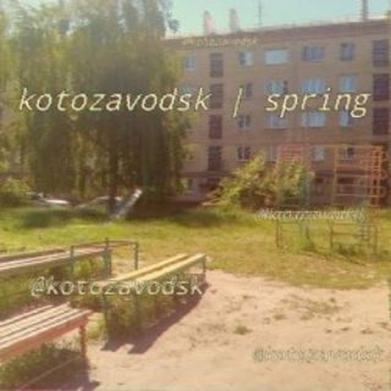
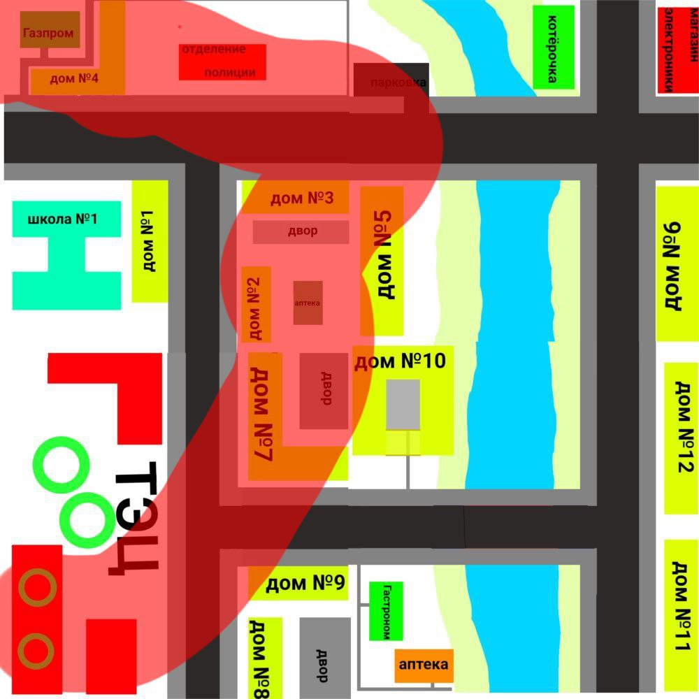

Котозаводск
[X] - Город возможно заброшен.
Причина: Город не публиковал никакого поста с 1 июня 2024 года.
Информация
Котозаводск - город, который находится на юго-востоке Котоссии. Он был создан 21 января 2024 года.

Аватарка Котозаводска в ТГ
Тревоги
9 февраля 2024 года в Котозаводске произошло землетрясение. Землетрясение было с магнитудой 6,7 баллов, и затронуло оно города Котозаводск, Котово, Мурленд, Тупиков, Мурляндия, КотэГрад; и деревни Молоково и Яча. Мэр Котозаводска сказал, что эвакуировать город они не успеют, и сказал жителям города спрятаться под стол или в дверные проёмы, но сказал, что лучше всего выйти из домов на открытую местность. --------------- 13 февраля 2024 года в Котозаводске в связи с аварией на ЖД путях, перевернулся поезд с химическими и радиационными веществами. В связи с этим в 19:00 по ЕКБ подъехали автобусы и увезли жителей в Котово и Котоярск. Полная версия сообщения об эвакуации: "Внимание, внимание!Внимание, внимание!Внимание, внимание! Уважаемые товарищи! Городской совет народных депутатов сообщает, что в связи с аварией на ЖД путях перевернулся поезд с химическими и радиоцыоными веществами в городе котозаводск складывается неблагоприятная радиационная и химическая обстановка. Партийными и советскими органами, воинскими частями принимаются необходимые меры. Однако, с целью обеспечения полной безопасности котов, и, в первую очередь, котят, возникает необходимость провести временную эвакуацию жителей города в населенные пункты Котова и Кошарска . Для этого к каждому жилому дому сегодня, 13 февраля, начиная с 17:00 ноль часов,начиная с 17:00 часов, будут поданы автобусы в сопровождении работников милиции и представителей горисполкома. Рекомендуется с собой взять документы, крайне необходимые вещи, а также, на первый случай, продукты питания. Руководителями предприятий и учреждений определен круг работников, которые остаются на месте для обеспечения нормального функционирования предприятий города. Все жилые дома на период эвакуации будут охраняться работниками милиции. Товарищи, временно оставляя свое жилье, не забудьте, пожалуйста, закрыть окна, выключить электрические и газовые приборы, перекрыть водопроводные краны. Просим соблюдать спокойствие, организованность и порядок при проведении временной эвакуации ." --------------- 13 апреля 2024 года на Котозаводск надвигалось торнадо категории F3. Путь торнадо был таким:

17 апреля 2024 года город был восстановлен от торнадо. --------------- 20 апреля 2024 года в Котозаводске ожидалось наводнение. К счастью 24 апреля 2024 года объявили, что наводнения не было благодаря ливнёвкам. --------------- 5 мая 2024 года в Котозаводске обнаружили ядерную бомбу, которая бы упала недалеко от города. Мэр города посоветовал всем спрятаться в подвалы, ванну или в помещение без окон, а также выключить газ и воду. Ядерная бомба взорвалась в воздухе, потому что другая ракета из Санкт-Котово взорвала ее. --------------- 25 ноября 2024 года в Котозаводске во время линейки в школе случился несчасныйы случай - на школу упал метеорит. 257 котят сильно ранены, бла бла бла я завтра закончу.Мэр
Мэр города - Тупик.